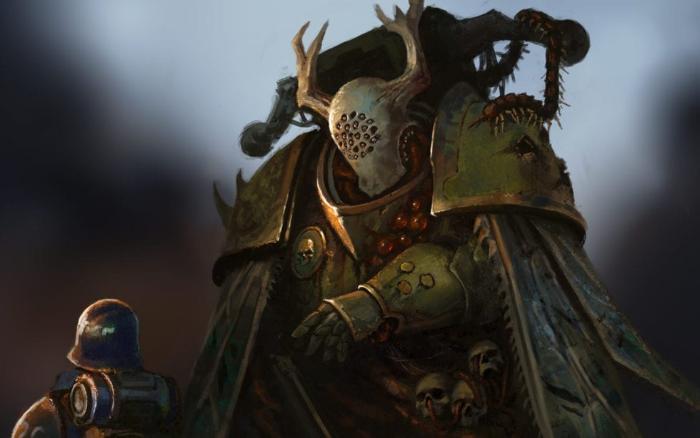
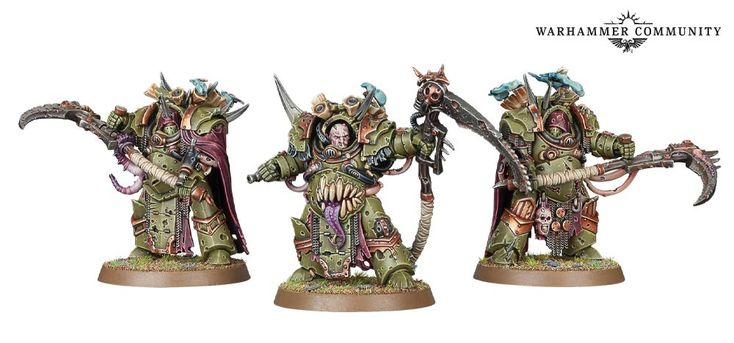

The Death Guard
Warhammer 40k is a strategic tabletop war game where players choose one of the games many factions and play against each other. A way to help conceptualize the game is to imagine chess. Models on the board have there own unique rules for moving and attacking.
 